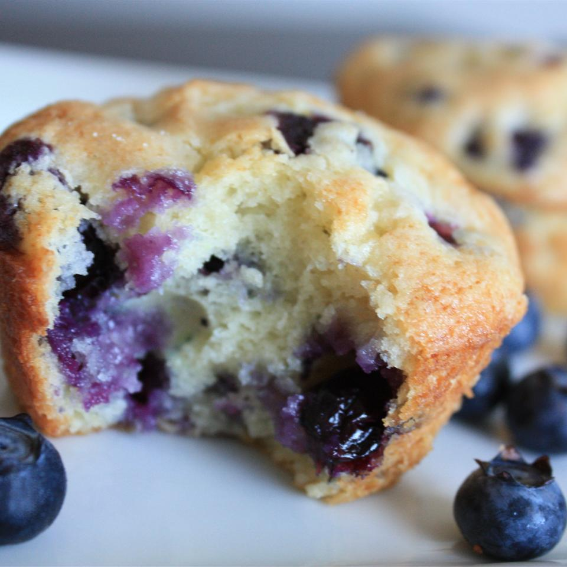

Blueberry Muffins

Description
Blueberry Muffins with a crusty sugar topping. Quick and easy, made with few ingredients.
Ingredients
- 1/2 cup unsalted butter
- 1 & 1/4 cups white sugar
- 1/2 teaspoon salt
- 2 eggs
- 2 cups all-purpose flour, divided
- 2 teaspoons baking powder
- 1/2 cup buttermilk
- 1 pint fresh blueberries - rinsed, drained and patted dry
- 2 tablespoons white sugar
Steps
- Position rack in the middle of oven.
- Preheat oven to 375 degrees F (190 degrees C)
- Spray the top of a muffin pan with non-stick coating and line with paper liners
- In a large bowl, cream together the butter, 1 & 1/4 cups sugar and salt until light and fluffy
- Beat in the eggs one at a time
- Mix together 1 & 3/4 cup of the flour and baking powder
- Beat in the flour alternately with the buttermilk, mixing just until incorporated
- Crush 1/4 of the blueberries and stir into the batter
- Mix the rest of the whole blueberries with the remaining 1/4 cup of flour and fold into the batter
- Scoop into muffin cups and sprinkle tops lightly with sugar
- Bake in preheated oven for 30 minutes or until golden brown and tops spring back when lightly tapped